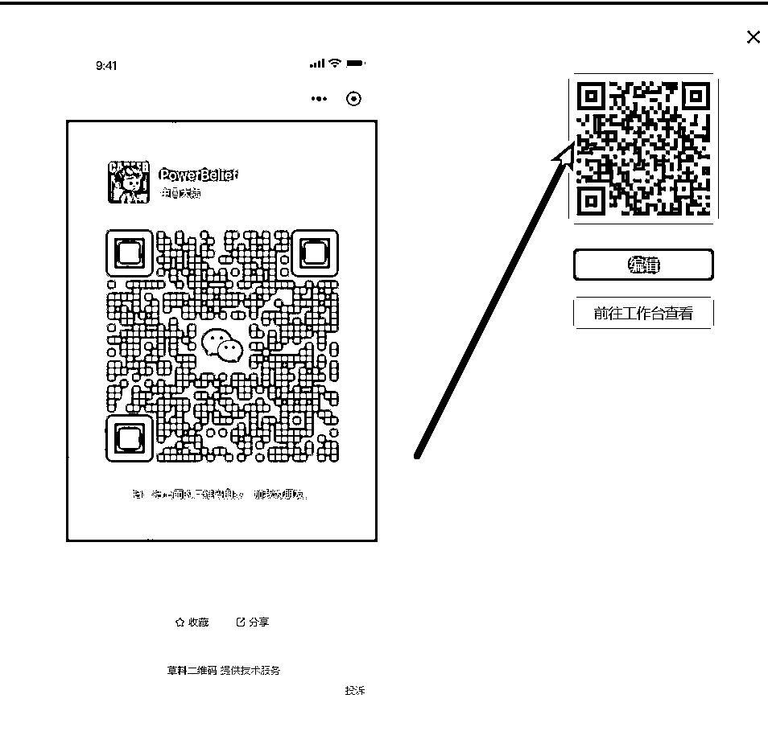

来源：https://p6srqcdscw.feishu.cn/docx/OqC7dtbKQopgzTxnwltcfZR8n5p
小红书引流和抖音引流想必是大多数做私域运营最头疼的问题
先说小红书，经过测试发现，小红书群聊内 或者私信，发网站链接是不可以直接点开的比如www.baidu.com，点击无效.
但是！小红书不会屏蔽掉自己的域名：www.xiaohongshu.com，在私信或者群聊里 是可以直接打开的！
这就有了小红书超级放封的引流方法：
先看视频
大致流程：小红书群里/私信发一个小红书官方的链接，打开后是跳转微信小程序，小程序可以放自己的二维码或者其他图
那么问题来了，小红书的域名没有办法放自己的页面，也没有办法吧自己的二维码放在他的网站里
但是，小红书有个小漏洞，就是他不识别根域名，只要二级域名包含了www.xiaohongshu.com，就是一个可以点击的，小红书域名~所以，我们可以利用二级域名来做一个自己的域名。
使用自己的一级域名，用www.xiaohongshu.com解析一个二级域名
所以我们前置工作需要准备：
一个域名并且备案
一个服务器，这些直接在阿里云或者腾讯云就可以买到。
假设你的域名是baidu.com，解析后得到的是www.xiaohongshu.com.baidu.com，然后申请一个ssl，得到https开头的链接，这样域名就搞定了。
然后就是打开跳转微信，并且打开小程序，这部分就要用到GPT3.5了，有的朋友说4.0好用，其实好用是相对的，写代码 3.5足够了。
首先通过微信小程序开发手册，找到APP跳转微信小程序的代码
location.href="weixin://dl/business/?t=xxx
然后我们只差一个html，让gpt来写一下。
这样我们就得到了一个html文件
但是这个文件还不能跳转到微信的小程序，需要把跳转到微信的小程序 js代码也一并写进去
现在就可以把这个代码保存成一个hlmt，放在自己的服务器上
（使用宝塔面板 更方便）
宝塔按照教程：https://www.bt.cn/new/index.html（这里跳过支线任务）
4.1、首先，保存一个跳转到微信小程序展示的图，可以是你自己的微信二维码或者其他，起到引流目的
4.2、然后打开草料二维码官网，注册一个账号，选择图片，上传4.1的图片，然后生成活码。
4.3、得到右边的二维码
4.4、点击预览，
4.5、弹出的窗口中，右键右边的二维码。选择“复制图片地址”

4.5，然后打开https://vhuoma.cn/URLScheme.html
选择方法二
把二维码地址填到输入框，点击获取 URL Scheme，
4.6，这个链接就是跳转到微信小程序打开后展示自己二维码的链接，将他放在html的源码里，保存~
https://https://www.xiaohongshu.com.xxx.xxx/123333.html，发到小红书，点击链接，即可跳转到微信，展示自己的二维码
xxx.xxx是你自己的域名
因为微信最新政策是，一个URL Scheme链接只能被一个人打开，但是这个不是们想要的效果，所以 我们需要做一个每次有新用户打开时，自动获取URL Scheme，然后替换到html里在打开链接。
6.1、继续使用GPT3.5，让他帮我们改下代码
我们把代码已经要求提交给GPT3.5
GPT就会帮我们把代码补充完整。↑
6.2，将GPT生成的代码复制到文本文件，然后保存


然后将文本文件名字改成url.php，上传到宝塔面板中。

小红书APP发送链接：https://https://www.xiaohongshu.com.xxx.xxx/url.php 直接点击链接，就可以实现无限跳转到微信并且展示二维码。
先看效果：
微信图标可以换任何形式的内容